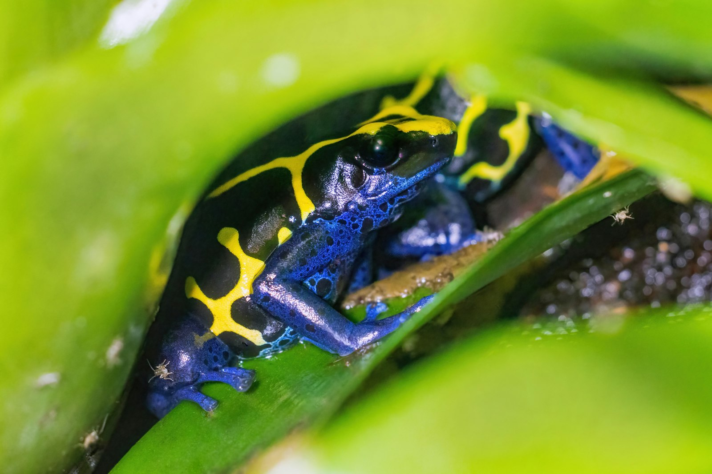
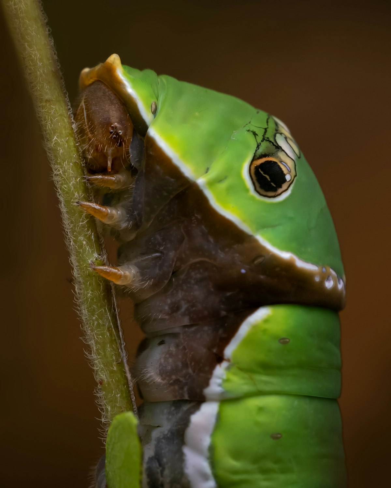
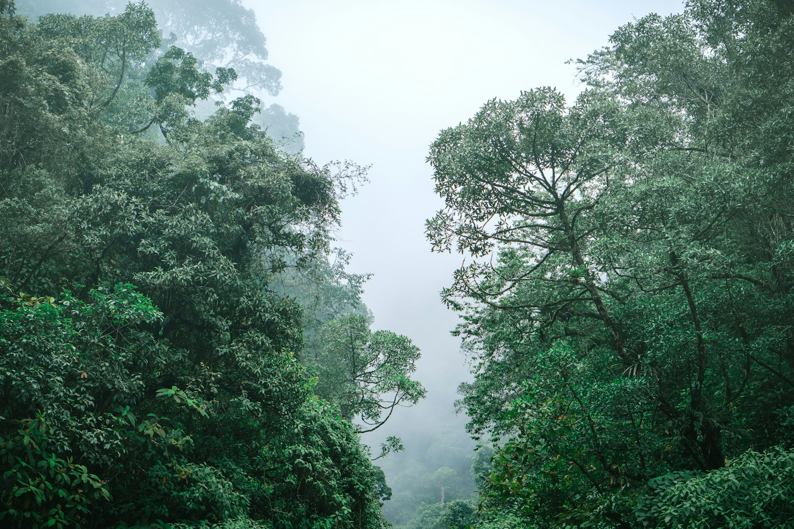

Amazon Field Guide · Wildlife No. 04
Poison Dart Frog: Tiny Jewels with a Deadly Secret
Electric blue, neon yellow, searing orange—these thumbnail frogs dress like warning signs. Their colours shout “don’t touch,” while their parenting skills quietly keep the understory buzzing.

Kneel on the damp leaf litter of an Amazon understory and you might spot a flash of blue no bigger than a bottle cap. Poison dart frogs—members of the dendrobatid family—come in more than 300 species from Nicaragua to Bolivia. Most measure only 15–25 millimetres; the largest reach about 65 millimetres. They look like living jewellery. Their defence is anything but delicate.
Unlike most frogs that hunt at night, many poison dart frogs are diurnal: they hop about in daylight on purpose. Their aposematic colours advertise danger so birds and snakes think twice. The golden poison frog can carry enough batrachotoxin to kill roughly ten adult humans or 20,000 mice—yet the poison is not cooked up from thin air. It comes from the frog’s dinner.
Understory neighbours with tiny territories
These amphibians favour humid lowland and montane rainforest floors and low plants. An individual may spend its whole life in a patch about 50 square metres wide, defending a favourite bromeliad or damp hollow. In the rainy season, males stake vocal territories with species-specific trills and chirps—tiny songs that say “this nursery is taken.”
Breeding is a team effort that would impress any Year 5 family roster. Eggs hatch into tadpoles that hitch rides on a parent’s sticky back. Dad—or sometimes Mum—carries each tadpole to its own rainwater pool in a bromeliad tank plant. Private nurseries cut competition and predation. Frog waste even fertilises the plant, while the plant offers safe water: a neat mutualism stacked in the forest’s vertical layers.
“Captive frogs fed safe crickets lose their poison—proof that wild toxins are borrowed from ants and mites, not made from scratch.”
Small body, big forest job
Day after day, dart frogs vacuum up ants, mites, termites, and other arthropods smaller than rice grains. That appetite helps protect seedlings from insect overload. When forests stay intact and prey stays diverse, frogs stay toxic and understory plants get a quieter life. Status varies wildly: some species are Least Concern, others Critically Endangered, and chytrid fungus has already driven many amphibians toward extinction worldwide.
Their beauty is also their risk. Collectors pay high prices for rare colour forms. Mining, roads, and farms carve the forest into islands too small for healthy breeding. When you protect a jewel-coloured frog, you are really protecting leaf litter, bromeliads, insect balance, and clean water in miniature pools—the rainforest in thumbnail scale.
How a dart frog builds its poison
- Hunt tiny toxic prey. Lightning tongues snatch alkaloid-rich ants, mites, and other arthropods that most animals avoid.
- Stockpile, don’t swallow harmlessly. Through bioaccumulation, specialised skin glands store dietary toxins and can concentrate them up to about 1,000 times.
- Wear the warning. Bright aposematic patterns teach predators that a colourful snack equals a bad day—or worse.
- Raise tadpoles in plant cups. Parents ferry young to bromeliad pools, feed them, and fertilise the plant host with nitrogen-rich waste.
Five things that make a poison dart frog a survivor
- Daytime activity paired with blazing colours turns danger into a billboard predators remember.
- Skin glands store dietary alkaloids as neurotoxins and related compounds for chemical defence.
- Sticky parental transport moves each tadpole to its own water nursery instead of dumping all eggs in one pond.
- Bromeliad partnerships supply private pools and return fertiliser to the plant host.
- A diet of ants and mites links the frog’s safety to a healthy, diverse understory food web.

Trouble ahead—and reasons to hope
Gold mining has torn through Amazon watersheds; in Suriname, mining extent jumped hundreds of percent between 2000 and 2014. Mercury and cleared forest wipe out frog habitat and poison food webs. Roads and farms slice remaining forest into scraps too small for lasting breeding populations. In degraded patches, prey diversity falls and frogs can lose toxicity—leaving them colourful but unprotected.
Illegal trade packs rare frogs into film canisters for overseas collectors; some breeding pairs sell for thousands of dollars. The chytrid fungus Batrachochytrium dendrobatidis has caused more wildlife extinctions than any pathogen in recorded history, and infections now appear even in Amazon lowlands once thought safer. Shifting rainfall and hotter days also stress bromeliad water quality and breeding clocks.
Hope is growing teeth. Legal breeding projects such as Colombia’s Tesoros de Colombia export captive-bred frogs with CITES permits, undercutting smugglers. Indigenous communities in Colombia’s Chocó have created reserves for golden poison frogs—animals tied to cultural history as well as ecology. Rapid chytrid tests and genetic tools help scientists spot disease and trafficking routes earlier. When people treat these jewels as indicators of forest health, protecting frogs becomes protecting the whole damp, glittering understory.

Odd facts
Word bank
- Aposematic
- — using bright colours or patterns to warn predators of danger.
- Bioaccumulation
- — building up chemicals in the body from food over time.
- Diurnal
- — active mainly during daylight hours.
- Bromeliad
- — a plant that often holds rainwater in a central “tank.”
- Chytrid fungus
- — a disease-causing fungus that attacks amphibian skin.
- Mutualism
- — a partnership where both species benefit.